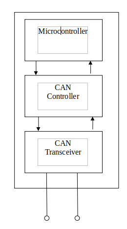

Controller Area Network (CAN)
Overview
The Controller Area Network (CAN) is a widely adopted communication protocol developed by Bosch in the mid-1980s, initially for the automotive industry. It serves as a robust and efficient means of real-time data exchange between microcontrollers and other electronic devices. CAN employs a message-oriented approach, encapsulating data in frames with unique identifiers to determine priority and content. Its characteristic features are:
In a CAN (Controller Area Network) bus system, nodes communicate with each other through a shared communication medium known as the bus. The bus serves as a central communication channel that connects all the nodes within the network. Each node in the system is typically a microcontroller or electronic device capable of sending and receiving messages.
The CAN bus is terminated using a 120-ohm resistor at both ends of the bus, typically at the physical extremities of the transmission lines. This resistor matches the characteristic impedance of the transmission line, effectively preventing signal reflections that can occur when a transmitted signal encounters an impedance mismatch. By absorbing the energy of reflected signals, the termination resistor ensures that the signals do not interfere with the ongoing communication on the bus.
CAN High (CAN_H) and CAN Low (CAN_L) represent the differential transmission system used by the CAN bus. The CAN protocol relies on the voltage difference between CAN_H and CAN_L for communication.
One benefit of employing this technique is that in the event of a voltage spike induced in the cable, both conductors are equally influenced. Consequently, the voltage difference between the two conductors remains intact, thereby furnishing the CAN network with a high level of immunity against electrical noise.
CAN employs a message-oriented framework where data is encapsulated within frames. These frames feature unique identifiers, crucial for determining the priority and content of the transmitted messages.
A distinctive aspect of CAN lies in its collision avoidance mechanism. Using non-destructive bitwise arbitration, the protocol ensures seamless communication even in scenarios where multiple nodes attempt simultaneous data transmission. This is particularly vital in applications requiring real-time responsiveness.
CAN has built-in fault-tolerant features. Error-detection mechanisms, such as Cyclic Redundancy Check (CRC), help identify and correct errors, enhancing the reliability of data transmission.
CAN uses a two-wire twisted-pair cable (CAN_H and CAN_L), simplifying the wiring in comparison to other communication protocols.
The CAN protocol is designed to support a large number of devices on a network, making it easy to add new devices or remove existing ones as needed.
In this setup, every node within the system receives every message transmitted on the bus. It becomes the responsibility of each individual node to independently determine whether the received message should be promptly discarded or retained for further processing. The decision-making process occurs at the level of each node based on its specific requirements and functionalities within the network.
An important advantage of employing a message-based protocol is the ease of integrating additional nodes into the system without requiring the reprogramming of existing nodes to acknowledge these additions. When a new node is introduced, it automatically begins receiving messages from the network. Subsequently, it evaluates the received information based on the message identifier (ID) to determine whether to process or discard the information. This flexibility simplifies the expansion of the network, allowing for seamless integration of new nodes without necessitating comprehensive adjustments to the existing system.
CAN Node Structure:
CAN Controller:
The CAN controller is responsible for managing the communication on the CAN bus. It handles tasks such as creating and interpreting CAN frames, error detection and handling, and controlling the timing of message transmission. The CAN controller can be a standalone hardware component or integrated into a microcontroller.
CAN Transceiver:
The transceiver is the interface between the CAN controller and the physical CAN bus. It converts the digital signals from the CAN controller into the appropriate voltage levels for transmission on the bus and vice versa. The transceiver also helps with tasks like collision detection and arbitration on the bus.
Microcontroller (or Microprocessor):
The microcontroller is the brain of the CAN node. It manages the higher-level functionality and application-specific tasks. This includes tasks like processing data, making decisions based on received messages, and interacting with other components of the system. The microcontroller is often responsible for configuring the CAN controller, handling application-specific protocols, and responding to or initiating communications on the CAN bus.
The combination of these three components enables the CAN node to participate in a robust and fault-tolerant communication network.
Advantages of CAN:
-
High Reliability:
The CAN protocol's design emphasizes robustness and fault tolerance, making it well-suited for critical systems like engine control and braking in automobiles.
The protocol's ability to continue functioning even in the presence of faults ensures reliable communication, which is crucial for the safety and performance of vehicles. -
Low Cost:
CAN's simple and efficient signaling method contributes to cost-effectiveness in implementation.
In the automotive industry, where cost considerations are paramount, the affordability of CAN makes it a preferred choice for various applications. -
Low Weight and Minimal Wiring:
The CAN protocol's use of a two-wire bus system reduces the amount of wiring required in vehicles.
The reduction in wiring not only lowers costs but also contributes to weight reduction, potentially improving fuel efficiency and overall vehicle performance. -
Scalability:
CAN is designed to support a large number of devices on a network, providing scalability. This feature makes it easy to add new devices or remove existing ones without significant changes to the overall system, offering flexibility in expanding or modifying the vehicle's electronic architecture.
Application of CAN :
-
Automotive Sector:
Originating for automotive applications, the CAN protocol finds extensive use in diverse systems within modern vehicles. It is employed for tasks ranging from managing engine and transmission functions to overseeing anti-lock brake systems and controlling electronic components in the vehicle's body.
-
Industrial Automation:
Within industrial automation systems, the CAN protocol serves as a communication backbone. It facilitates seamless interaction among devices, enabling the coordination of actions such as motor control, sensor feedback, and the operation of various industrial equipment.
-
Building Automation:
The CAN protocol plays a pivotal role in building automation systems, serving to regulate and monitor diverse building functions. These include the management of heating, ventilation, air conditioning (HVAC) systems, lighting controls, and security systems, fostering efficient and integrated control of building infrastructure.

Buy full version to unlock all the content & features